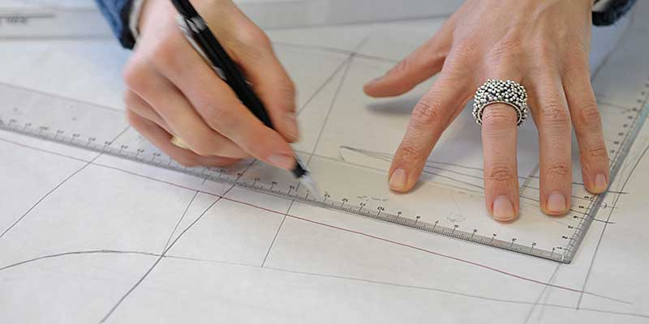

Kleidung, so individuell wie Ihre Persönlichkeit
Atelier Brokat – Kleidung, so individuell wie Ihre Persönlichkeit
Ein Kleidungsstück, das es so nur einmal gibt. So wie Sie! Lassen Sie sich von uns Ihre Kleidung maßschneidern. Wir schneidern Ihre Garderobe perfekt auf Sie zu. Im Atelier Brokat erhalten Sie Mode, die Ihre Persönlichkeit betont und richtig passt. In maßgeschneiderter Kleidung fühlen Sie sich sicher und wohl. Schlicht und elegant, ausgefallen und gewagt, frech und modern – wie wollen Sie sich zeigen?
Handwerkliches Können trifft Kreativität Langjährige Erfahrung, handwerkliches Können, Gespür für Proportion, Form und Farbe, Kreativität und Einfühlungsvermögen – das Team des Ateliers Brokat berät und entwickelt mit Ihnen zusammen individuelle Mode für jeden Anlass: für Büro, Freizeit, Hochzeiten oder Galabälle. Unsere Maßbekleidung besticht durch Stil und Eleganz. Unser Team berät Damen und Herren bei der Auswahl des Stoffes, nimmt Maß und entwickelt typgerechte Schnitte. Sie müssen keine perfekte Figur haben, um großartige Modellkleider zu tragen oder sich einen schicken Hosenanzug, ein Kostüm oder einen besonderen Mantel machen zu lassen. Gerne dürfen Sie Ihre eigenen Stoffe mitbringen. Oder wählen Sie aus unseren Stoffen und den Stoffkatalogen namhafter Hersteller aus.
Gut aussehen und Individualität zeigen Ob im Business oder beim Galadinner, bei der Präsentation vor Kunden, beim Stadtbummel oder beim Opernbesuch – unsere Kundinnen lieben das Gefühl, wenn sich das Kleidungsstück wie eine zweite Haut an ihren Körper schmiegt, sie absolute Bewegungsfreiheit haben und dabei richtig gut aussehen. Unsere Modelle werden aus einer Auswahl hochwertiger Stoffe und Tuche individuell und entsprechend Ihrer Proportionen geschneidert. Wir schneidern für Sie:
Maßgeschneiderte Lösungen
Jeder, der je einen maßgeschneiderten Anzug getragen hat, wird bestätigen, wie unvergleichlich angenehm er sich trägt. Vor allem Menschen in Führungspositionen, die Tag für Tag verhandeln, Konferenzen leiten oder sich vor Publikum präsentieren müssen, schwören auf maßgeschneiderte Kleidung. Hierin fühlen Sie sich sicher und treten souverän auf. Wir schneidern für Sie: